Le petit déj’
Un filtre, les pâtisseries sorties du four, et la salle encore calme.
Nantes — depuis 2020
Un café de spécialité, une cuisine qui suit la saison, une boutique. Adeline et Florian ont ouvert Alaïa en juillet 2020.
Mardi → Samedi
8:30 → 17:30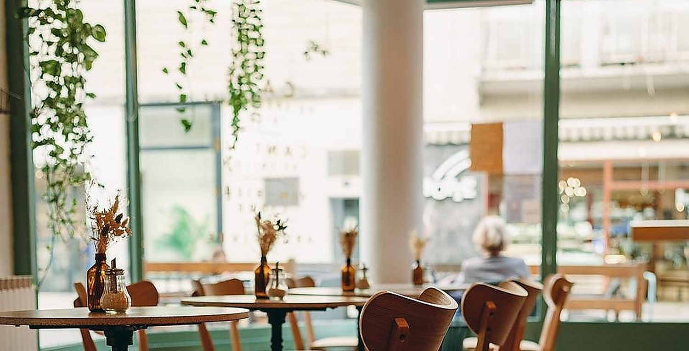
Adeline et Florian ont ouvert Alaïa en juillet 2020, au centre de Nantes. Le principe n’a pas bougé : on ne réserve pas. S’il y a de la place, elle est pour vous. Sinon, la salle se vide en début d’après-midi et le goûter commence.
La pièce tient en peu de choses : des murs clairs, des guirlandes, des plantes suspendues dans des paniers, des cadres qui changent au gré des artistes accrochés. On y travaille au calme le matin, on y déjeune vite le midi, on y traîne l’après-midi.
Les chiens dorment sous les tables. Ce n’est écrit nulle part, mais tout le monde le sait.
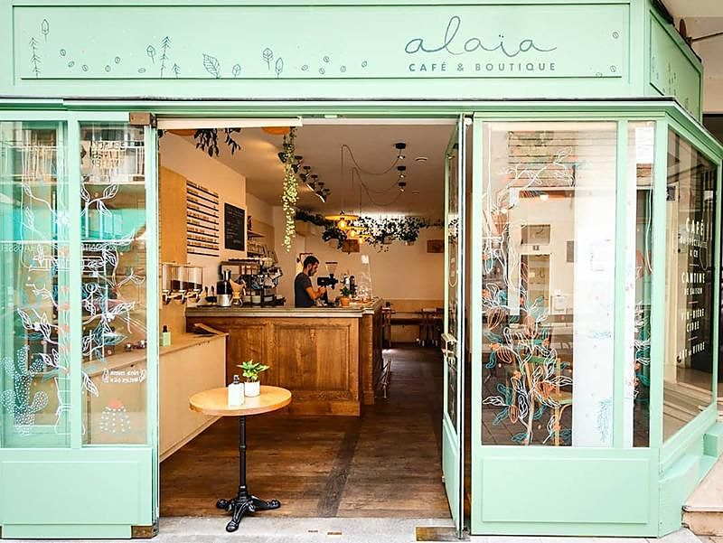
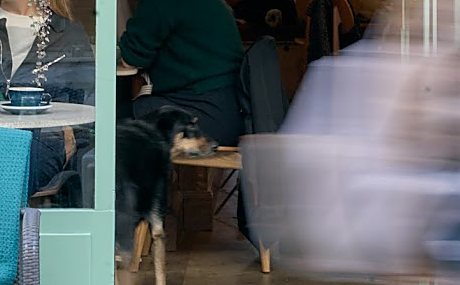
Trois cafés à la carte en permanence, choisis sur trois continents.
Du plus doux au plus franc. La sélection tourne avec la saison — jamais la même toute l’année.
Filtre, V60, espresso, cappuccino. Et du thé bio pour ceux que la caféine fatigue.
Les grains ne restent pas derrière le comptoir : ils sont vendus en vrac. Vous repartez avec ce que vous venez de boire.
Le chaï est une recette maison, retravaillée jusqu’à tomber juste. Les jus sont pressés ici, en partie avec les fruits du verger de la famille.
Toujours plus de caféine.
Prix relevés en juillet 2026
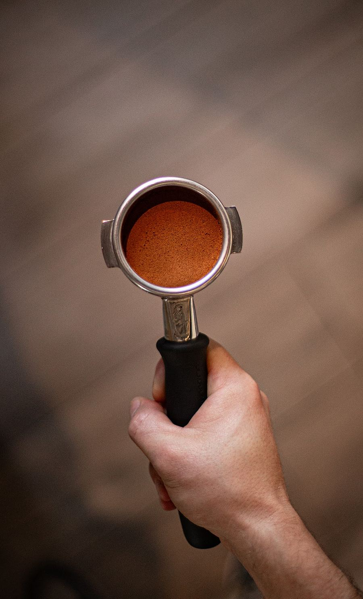
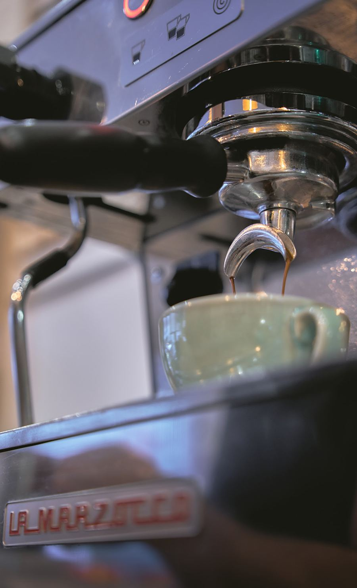
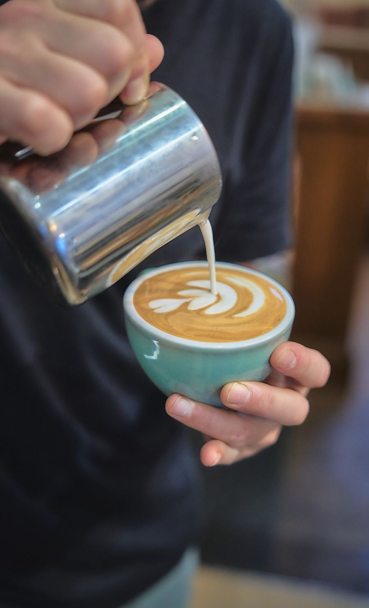
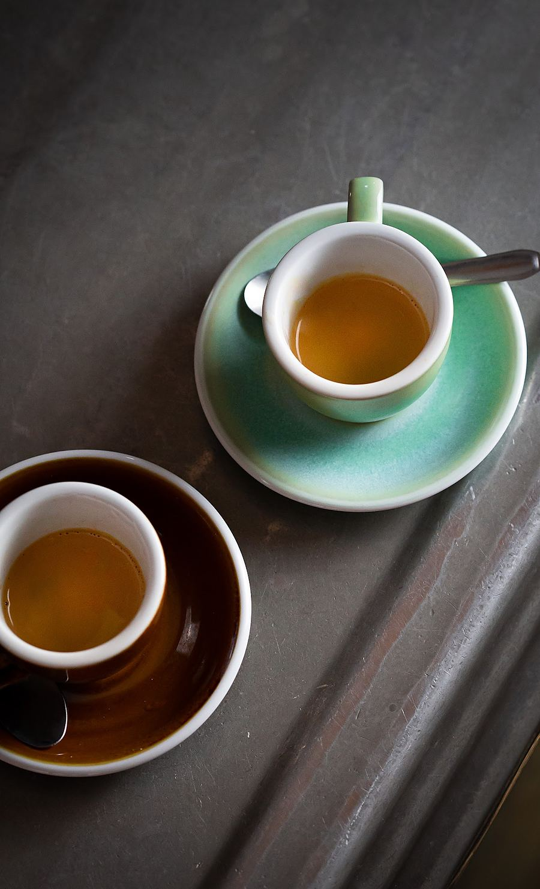
Tout est fait ici, en petites quantités. Ce qui n’est plus de saison sort de la carte, ce qui arrive y entre. C’est pour ça qu’elle est courte.
Un filtre, les pâtisseries sorties du four, et la salle encore calme.
Trois propositions : un toastie, un plat, une assiette végétarienne. Puis un dessert maison.
Fried eggs on toast et scones salés jusqu’à 11h. Ensuite, les petits plats jusqu’à 14h.
Carrot cake, babka au chocolat, brownie cacahuète, cookies, et le gâteau de la semaine.
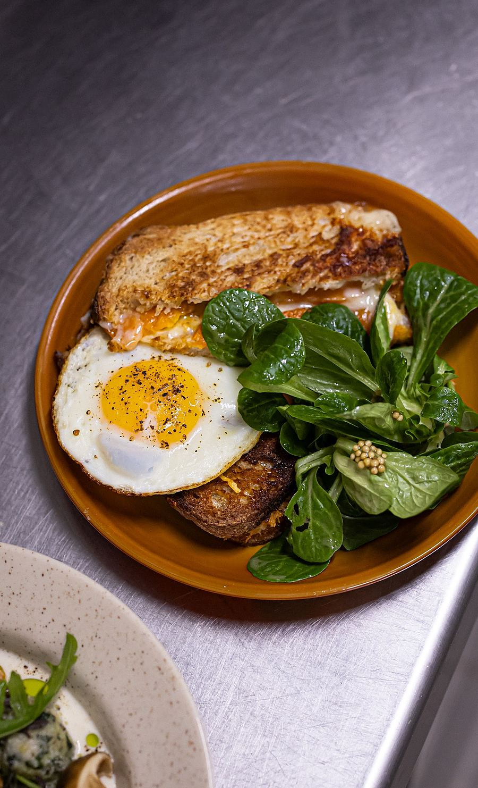
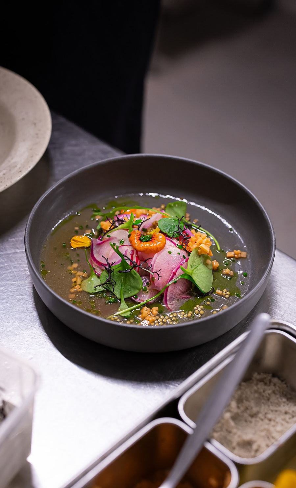
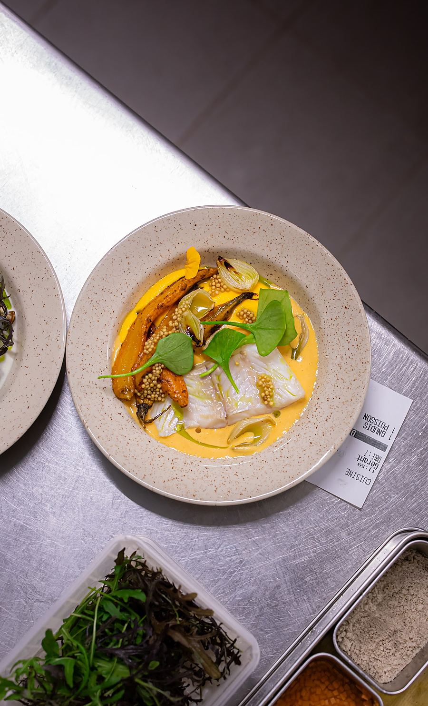
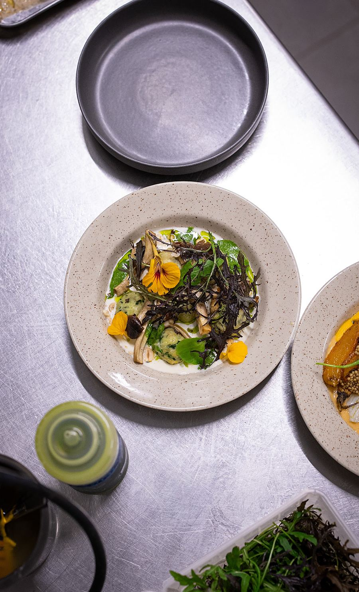
Le comptoir n’est pas qu’un comptoir. Les grains en vrac, les objets d’artisans, les pièces d’artistes accrochées aux murs — et qui tournent, parce que les murs se vident quand quelqu’un achète.
Un coin zéro déchet, aussi : des gourdes qui se remplissent plutôt que des bouteilles qui se jettent.
Il n’y a pas de catalogue en ligne. Ce qui est là est là, et ça change.
En septembre 2023, Adeline et Florian ont ouvert Horizon, rue Léon Jamin, dans une ancienne galerie d’art. Coffee shop d’un côté, cave à café de l’autre.
On y trouve des grains rares — Amérique latine, Afrique, Asie — torréfiés en France et en Europe, du plus doux au plus franc. C’est le prolongement du comptoir d’Alaïa, en plus grand.
Producteurs et artisans cités par la maison — le pain, le chocolat, les légumes, les fruits.
4 rue de Budapest,
44000 Nantes.
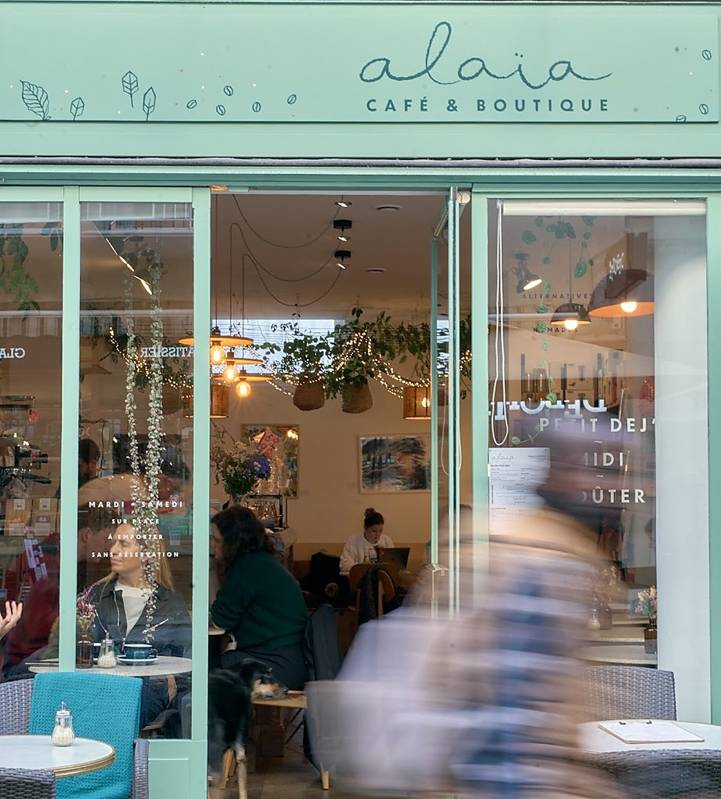
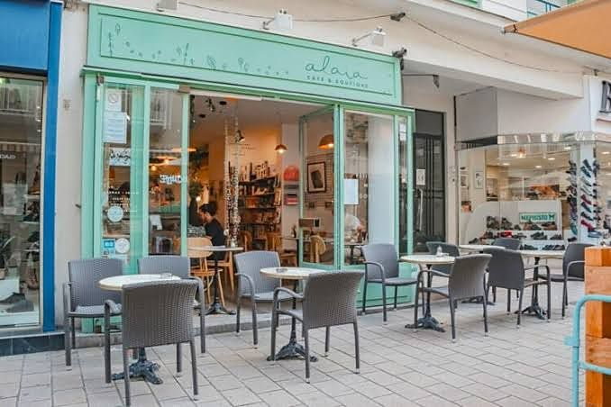